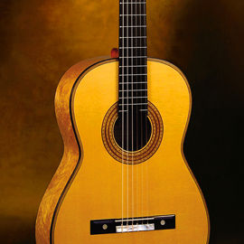
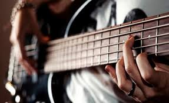

Гитара
Гитара — струнный щипковый музыкальный инструмент. Применяется в качестве аккомпанирующего или сольного инструмента во многих стилях и направлениях музыки, среди которых романс, блюз, кантри, фламенко, рок, джаз.
Она возникла в 20 веке. Научиться играть на ней - легко. Гитара мало весит, по этому ее можно взять в походы, в поездки и другие приключения)
Про сайт
Здесь вы научитесь игре на гитаре
Вы узнаете табы и ноты. Поймете: что и где зажимать).
Ведь гитара- это легко и просто!
И обучение не займет много времени.
Ноты на гитарном строе.
Первая струна самая тонкая - ми. Вторая - си. Третья - соль. Четвертая - ре. Пятая - ля. Шестая струна самая толстая - ми, но другой октавы.
Гитара имеет лады. Лад отвечает за ноту. Зажимая лад, звучит другая нота. Ноты по ладам идут как в октаве. Например: зажимая первый лад третьей струны(соль), звучит нота соль диез, а зажимая второй лад - ля.
- Morbi luctus, quam vitae cursus tincidunt.
- Pellentesque habitant morbi tristique senectus.
- Duis at sapien ut sapien commodo molestie.
- In aliquet blandit iaculis, et vitae elit libero.
- Maecenas posuere fringilla ipsum ut pretium.
-----------------------
-----------------------
-----------------------
-----------------------
Аккорды/Табы
Это аккорды. Аккорд - это сочетание трёх и более музыкальных звуков разной высоты, взятых одновременно.
Произведения для начинающих:
Guitar Guide
Moldavanov